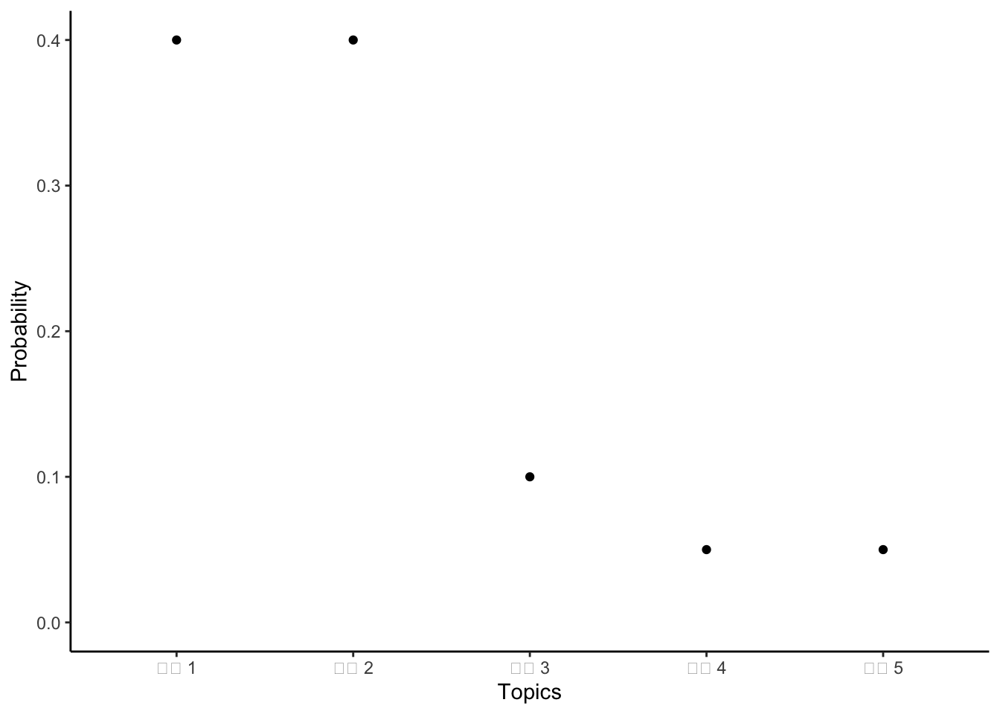
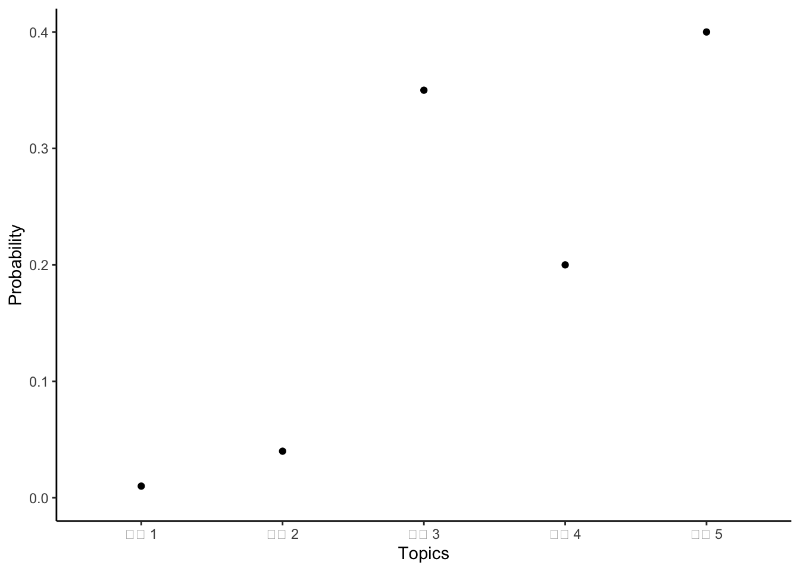
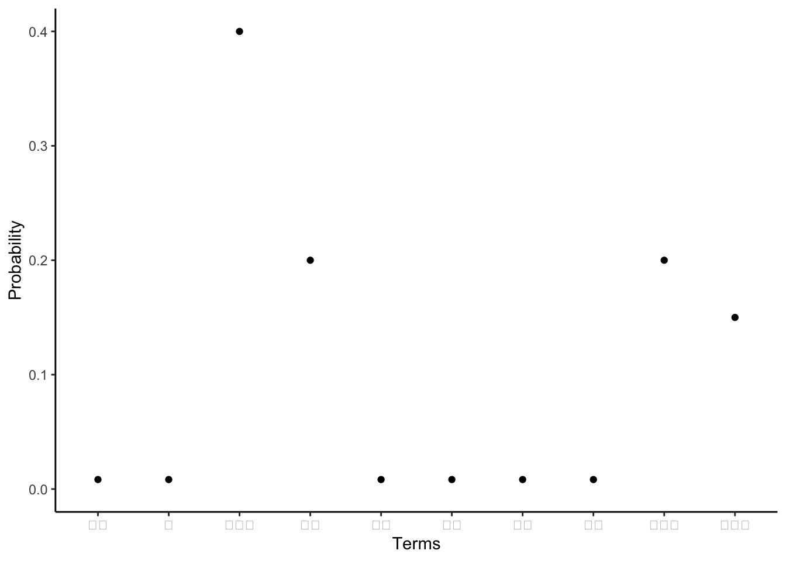
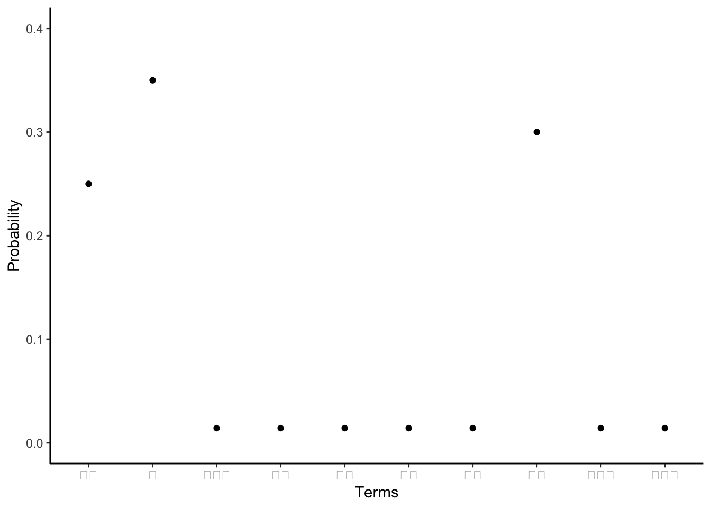

library(astrologer)
# library(beepr)
library(fs)
# library(gutenbergr)
# library(quanteda)
# library(stm)
library(tidytext)
library(tidyverse)
library(tinytable)17 데이터로서의 텍스트
선수 지식
- 데이터로서의 텍스트: 개요, (Benoit 2020)
- 이 장은 텍스트를 데이터로 사용하는 것에 대한 개요를 제공합니다.
- R을 사용한 텍스트 분석을 위한 지도 기계 학습, (Hvitfeldt 와/과 Silge 2021)
- 텍스트를 데이터로 사용하여 선형 및 일반화 선형 모델을 구현하는 6장 “회귀” 및 7장 “분류”에 집중하세요.
- 벌거벗은 진실: 6,816개 피부색 제품 이름이 아름다움의 편향을 어떻게 드러낼 수 있는가, (Amaka 와/과 Thomas 2021)
- 화장품 텍스트 분석.
핵심 개념 및 기술
- 텍스트를 분석할 수 있는 데이터 소스로 이해하면 많은 흥미로운 질문을 고려할 수 있습니다.
- 텍스트 정리 및 준비는 가능한 결과가 많기 때문에 특히 중요합니다. 이 단계에서 많은 결정을 내려야 하며, 이는 분석 후반에 중요한 영향을 미칩니다.
- 텍스트 데이터셋을 고려하는 한 가지 방법은 특정 문서를 구별하는 단어를 살펴보는 것입니다.
- 또 다른 방법은 문서에 포함된 주제를 고려하는 것입니다.
소프트웨어 및 패키지
- Base R (R Core Team 2024)
astrologer(Gelfand 2022) (이 패키지는 CRAN에 없으므로devtools::install_github("sharlagelfand/astrologer")로 설치하세요)beepr(Bååth 2018)fs(Hester, Wickham, 와/과 Csárdi 2021)gutenbergr(Johnston 와/과 Robinson 2022)quanteda(Benoit 기타 2018)stm(Roberts, Stewart, 와/과 Tingley 2019)tidytext(Silge 와/과 Robinson 2016)tidyverse(Wickham 기타 2019)tinytable(Arel-Bundock 2024)
17.1 서론
텍스트는 우리 주변에 있습니다. 많은 경우, 텍스트는 우리가 접하는 가장 초기 유형의 데이터입니다. 계산 능력의 증가, 새로운 방법의 개발, 그리고 텍스트의 엄청난 가용성은 텍스트를 데이터로 사용하는 데 큰 관심을 불러일으켰습니다. 텍스트를 데이터로 사용하면 독특한 분석 기회를 제공합니다. 예를 들어:
- 아프리카 국가의 국영 신문 텍스트 분석은 정부의 조작을 식별할 수 있습니다(Hassan 2022);
- 영국 일간 신문 텍스트는 GDP 및 인플레이션에 대한 더 나은 예측을 생성하는 데 사용될 수 있으며(Kalamara 기타 2022), 마찬가지로 뉴욕 타임즈는 미국 경제 활동과 상관 관계가 있는 불확실성 지수를 생성하는 데 사용될 수 있습니다(Alexopoulos 와/과 Cohen 2015);
- 전자 건강 기록(EHR)의 메모 분석은 질병 예측의 효율성을 향상시킬 수 있습니다(Gronsbell 기타 2019); 그리고
- 미국 의회 기록 분석은 여성 의원들이 남성에게 얼마나 자주 방해받는지 보여줍니다(Miller 와/과 Sutherland 2022).
텍스트 분석에 대한 초기 접근 방식은 컨텍스트와 분리된 단어를 숫자로 변환하는 경향이 있었습니다. 그런 다음 로지스틱 회귀의 변형과 같은 전통적인 접근 방식을 사용하여 분석할 수 있었습니다. 더 최근의 방법은 텍스트에 내재된 구조를 활용하려고 시도하며, 이는 추가적인 의미를 가져올 수 있습니다. 그 차이는 아마도 유사한 색상을 그룹화할 수 있는 아이와 어떤 물체가 무엇인지 아는 아이의 차이와 같을 것입니다. 악어와 나무는 모두 녹색이며, 그 지식으로 무언가를 할 수 있지만, 악어가 당신을 잡아먹을 수 있고 나무는 아마도 그렇지 않을 것이라는 것을 아는 것이 유용합니다.
텍스트는 이 책 전체에서 사용한 데이터셋의 다루기 어렵지만 유사한 버전으로 간주될 수 있습니다. 주요 차이점은 일반적으로 각 변수가 단어 또는 더 일반적으로 토큰인 넓은 데이터로 시작한다는 것입니다. 종종 각 항목은 개수입니다. 그런 다음 일반적으로 이를 단어 변수와 개수 변수가 있는 상당히 긴 데이터로 변환합니다. 텍스트를 데이터로 간주하는 것은 자연스럽게 컨텍스트에서 일부 추상화를 필요로 합니다. 그러나 이는 역사적 불평등을 영속화할 수 있으므로 완전히 분리되어서는 안 됩니다. 예를 들어, (koenecke2020은?) 자동 음성 인식 시스템이 백인 화자에 비해 흑인 화자에 대해 훨씬 더 나쁜 성능을 보인다는 것을 발견했으며, (davidson2019racial은?) 특정하게 정의된 기술 용어인 흑인 미국 영어를 사용하는 트윗이 표준 미국 영어(다시 기술 용어임)의 유사한 트윗보다 더 높은 비율로 혐오 발언으로 분류된다는 것을 발견했습니다.
텍스트 데이터의 흥미로운 측면 중 하나는 일반적으로 분석 목적으로 생성되지 않는다는 것입니다. 단점은 우리가 작업할 수 있는 형태로 만들기 위해 일반적으로 더 많은 작업을 해야 한다는 것입니다. 데이터 정리 및 준비 단계에서 많은 결정을 내려야 합니다.
텍스트 데이터셋의 크기가 커질수록 분석에 있어서 시뮬레이션하고 작게 시작하는 것이 특히 중요합니다. 텍스트를 데이터로 사용하는 것은 우리에게 사용 가능한 텍스트의 양과 다양성 때문에 흥미롭습니다. 그러나 일반적으로 텍스트 데이터셋을 다루는 것은 지저분합니다. 일반적으로 많은 정리 및 준비가 필요합니다. 종종 텍스트 데이터셋은 큽니다. 따라서 재현 가능한 워크플로를 마련하고 발견한 내용을 명확하게 전달하는 것이 중요합니다. 그럼에도 불구하고, 흥미로운 분야입니다.
거인의 어깨 위에 서서
케네스 브누아 교수는 런던 경제 정치 대학(LSE)의 계산 사회 과학 교수이자 데이터 과학 연구소 소장입니다. 1998년 하버드 대학교에서 게리 킹과 케네스 셰플의 지도를 받아 정부학 박사 학위를 받은 후, 더블린 트리니티 칼리지에서 자리를 잡았고 2007년 교수로 승진했습니다. 2020년 LSE로 옮겼습니다. 그는 텍스트 데이터, 특히 정치 텍스트 및 소셜 미디어를 분석하는 정량적 방법의 전문가입니다. 그의 중요한 논문 중 일부는 정치 텍스트에서 정책 입장을 추출하고 정치학에서 “데이터로서의 텍스트” 하위 분야를 시작하는 데 도움이 된 (laver2003을?) 포함합니다. 그는 또한 수십 개국에서 원본 전문가 설문 조사 입장을 제공한 (benoitbook과?) 전문가 설문 조사를 당 정책 입장의 수동 코딩 분석과 비교한 (benoit2007과?) 같은 정책 입장을 추정하는 다른 방법에도 광범위하게 작업했습니다. 핵심 기여는 “텍스트 데이터의 정량적 분석”을 위한 quanteda(Benoit 기타 2018)로 알려진 R 패키지 제품군으로, 텍스트 데이터를 쉽게 분석할 수 있게 해줍니다.
이 장에서는 먼저 텍스트 데이터셋 준비를 고려합니다. 그런 다음 용어 빈도-역 문서 빈도(TF-IDF) 및 주제 모델을 고려합니다.
17.2 텍스트 정리 및 준비
텍스트 모델링은 흥미로운 연구 분야입니다. 그러나 일반적으로 말하자면, 정리 및 준비 측면은 모델링만큼이나 어렵습니다. 몇 가지 필수 사항을 다루고 구축할 수 있는 기반을 제공할 것입니다.
첫 번째 단계는 데이터를 가져오는 것입니다. sec-gather-data에서 데이터 수집에 대해 논의했으며, 다음을 포함한 많은 출처를 언급했습니다.
- 리뷰에서 텍스트를 제공하는 Inside Airbnb 사용.
- 저작권이 만료된 책에서 텍스트를 제공하는 프로젝트 구텐베르크.
- 위키피디아 또는 기타 웹사이트 스크래핑.
텍스트 정리 및 준비에 필요한 핵심 패키지는 tidyverse의 일부인 stringr와 quanteda입니다.
설명을 위해 토니 모리슨의 빌러브드, 헬렌 드윗의 마지막 사무라이, 샬럿 브론테의 제인 에어 세 권의 책에서 첫 문장 또는 두 문장으로 구성된 코퍼스를 구성합니다.
last_samurai <-"우리 아버지의 아버지는 감리교 목사였다."
beloved <- "124는 악의적이었다. 아기의 독으로 가득했다."
jane_eyre <- "그날은 산책을 할 가능성이 없었다."
bookshelf <-
tibble(
book = c("마지막 사무라이", "빌러브드", "제인 에어"),
first_sentence = c(last_samurai, beloved, jane_eyre)
)
bookshelf# A tibble: 3 × 2
book first_sentence
<chr> <chr>
1 마지막 사무라이 우리 아버지의 아버지는 감리교 목사였다.
2 빌러브드 124는 악의적이었다. 아기의 독으로 가득했다.
3 제인 에어 그날은 산책을 할 가능성이 없었다. 우리는 일반적으로 각 관측치에 문서, 각 열에 단어, 그리고 관련 메타데이터와 함께 각 조합에 대한 개수를 포함하는 문서-특징 행렬을 구성하고자 합니다. 예를 들어, 코퍼스가 에어비앤비 리뷰 텍스트였다면, 각 문서는 리뷰일 수 있으며, 일반적인 특징에는 “The”, “Airbnb”, “was”, “great” 등이 포함될 수 있습니다. 여기서 문장이 다른 단어로 분리되었다는 점에 유의하십시오. 우리는 일반적으로 관심 있는 다양한 측면 때문에 단어에서 벗어나 “토큰”이라는 용어를 사용하지만, 단어가 일반적으로 사용됩니다.
books_corpus <-
corpus(bookshelf,
docid_field = "book",
text_field = "first_sentence")
books_corpusquanteda(Benoit 기타 2018)의 dfm()을 사용하여 코퍼스의 토큰을 사용하여 문서-특징 행렬(DFM)을 구성합니다.
books_dfm <-
books_corpus |>
tokens() |>
dfm()
books_dfm이제 이 과정의 일부로 내려야 할 많은 결정을 고려합니다. 명확한 정답이나 오답은 없습니다. 대신, 데이터셋을 무엇에 사용할지에 따라 결정을 내립니다.
17.2.1 불용어
불용어는 “the”, “and”, “a”와 같은 단어입니다. 오랫동안 불용어는 많은 의미를 전달하지 않는다고 생각되었고, 메모리 제약 계산에 대한 우려가 있었습니다. 텍스트 데이터셋을 준비하는 일반적인 단계는 불용어를 제거하는 것이었습니다. 이제 불용어가 많은 의미를 가질 수 있다는 것을 알고 있습니다(Schofield, Magnusson, 와/과 Mimno 2017). 불용어를 제거할지 여부에 대한 결정은 상황에 따라 달라지는 미묘한 결정입니다.
quanteda의 stopwords()를 사용하여 불용어 목록을 얻을 수 있습니다.
stopwords(source = "snowball")[1:10]그런 다음 해당 목록의 모든 단어 인스턴스를 찾아 str_replace_all()을 사용하여 대략적으로 제거할 수 있습니다.
stop_word_list <-
paste(stopwords(source = "snowball"), collapse = " | ")
bookshelf |>
mutate(no_stops = str_replace_all(
string = first_sentence,
pattern = stop_word_list,
replacement = " ")
) |>
select(no_stops, first_sentence)다른 사람들이 만든 많은 불용어 목록이 있습니다. 예를 들어, stopwords()는 “snowball”, “stopwords-iso”, “smart”, “marimo”, “ancient”, “nltk”를 포함한 목록을 사용할 수 있습니다. 더 일반적으로, 불용어를 사용하기로 결정하면 종종 프로젝트별 단어로 그러한 목록을 보강해야 합니다. 코퍼스에서 개별 단어의 개수를 생성한 다음, 가장 흔한 단어를 기준으로 정렬하고 적절하게 불용어 목록에 추가하여 이를 수행할 수 있습니다.
stop_word_list_updated <-
paste(
"Methodist |",
"spiteful |",
"possibility |",
stop_word_list,
collapse = " | "
)
bookshelf |>
mutate(no_stops = str_replace_all(
string = first_sentence,
pattern = stop_word_list_updated,
replacement = " ")
) |>
select(no_stops)quanteda의 dfm_remove()를 사용하여 불용어 제거를 DFM 구성에 통합할 수 있습니다.
books_dfm |>
dfm_remove(stopwords(source = "snowball"))불용어를 제거하면 데이터셋을 인위적으로 조정합니다. 때로는 그렇게 하는 것이 좋은 이유가 있을 수 있습니다. 그러나 무심코 해서는 안 됩니다. 예를 들어, sec-farm-data 및 sec-store-and-share에서 데이터셋이 응답자의 개인 정보 보호를 위해 검열, 절단 또는 유사한 방식으로 조작되어야 할 수 있다고 논의했습니다. 자연어 처리에서 불용어 제거를 기본 단계로 통합한 것은 이러한 방법이 개발되었을 때 더 제한적이었을 수 있는 계산 능력 때문일 수 있습니다. 어쨌든, Jurafsky 와/과 Martin ([2000년] 2023, p. 62)은 불용어 제거가 텍스트 분류 성능을 향상시키지 않는다고 결론 내립니다. 관련하여, (schofield2017은?) 나중에 다룰 주제 모델링의 맥락에서, 어간 추출이 거의 영향을 미치지 않으며, 가장 흔한 단어를 제외한 다른 단어를 제거할 필요가 거의 없다는 것을 발견했습니다. 불용어를 제거해야 한다면, 주제가 구성된 후에 제거할 것을 권장합니다.
17.2.2 대소문자, 숫자 및 구두점
단어만 중요하고 대소문자나 구두점은 중요하지 않은 경우가 있습니다. 예를 들어, 텍스트 코퍼스가 특히 지저분하거나 특정 단어의 존재가 유익한 경우입니다. 정보 손실을 감수하고 더 간단하게 만드는 이점을 얻습니다. str_to_lower()로 소문자로 변환하고, str_replace_all()을 사용하여 “[:punct:]”로 구두점을 제거하고, “[:digit:]”로 숫자를 제거할 수 있습니다.
bookshelf |>
mutate(lower_sentence = str_to_lower(string = first_sentence)) |>
select(lower_sentence)# A tibble: 3 × 1
lower_sentence
<chr>
1 우리 아버지의 아버지는 감리교 목사였다.
2 124는 악의적이었다. 아기의 독으로 가득했다.
3 그날은 산책을 할 가능성이 없었다. bookshelf |>
mutate(no_punctuation_numbers = str_replace_all(
string = first_sentence,
pattern = "[:punct:]|[:digit:]",
replacement = " "
)) |>
select(no_punctuation_numbers)# A tibble: 3 × 1
no_punctuation_numbers
<chr>
1 "우리 아버지의 아버지는 감리교 목사였다 "
2 " 는 악의적이었다 아기의 독으로 가득했다 "
3 "그날은 산책을 할 가능성이 없었다 " 여담으로, str_replace_all()에서 “[:graph:]”를 사용하여 문자, 숫자 및 구두점을 제거할 수 있습니다. 이는 교과서 예시에서는 거의 필요하지 않지만, 실제 데이터셋에서는 특히 유용합니다. 왜냐하면 일반적으로 식별하고 제거해야 할 소수의 예상치 못한 기호가 있기 때문입니다. 우리는 익숙한 모든 것을 제거하고, 익숙하지 않은 것만 남겨둡니다.
더 일반적으로, quanteda()의 tokens()에서 인수를 사용하여 이를 수행할 수 있습니다.
books_corpus |>
tokens(remove_numbers = TRUE, remove_punct = TRUE)17.2.3 오타 및 흔하지 않은 단어
그런 다음 오타 및 기타 사소한 문제에 대해 무엇을 할지 결정해야 합니다. 모든 실제 텍스트에는 오타가 있습니다. 때로는 명확하게 수정해야 합니다. 그러나 체계적인 방식으로 만들어진 경우, 예를 들어 특정 작가가 항상 동일한 실수를 하는 경우, 작가별로 그룹화하는 데 관심이 있다면 가치가 있을 수 있습니다. OCR 사용은 sec-gather-data에서 보았듯이 일반적인 문제를 야기할 것입니다. 예를 들어, “the”는 일반적으로 “thc”로 잘못 인식됩니다.
불용어를 수정하는 것과 동일한 방식으로 오타를 수정할 수 있습니다. 즉, 수정 목록을 사용하는 것입니다. 흔하지 않은 단어의 경우, dfm_trim()을 사용하여 문서-특징 행렬 생성에 이를 포함할 수 있습니다. 예를 들어, 최소 두 번 이상 나타나지 않는 단어를 제거하기 위해 “min_termfreq = 2”를 사용하거나, 문서의 5% 이상에 나타나지 않는 단어를 제거하기 위해 “min_docfreq = 0.05”를 사용하거나, 문서의 90% 이상에 나타나는 단어를 제거하기 위해 “max_docfreq = 0.90”을 사용할 수 있습니다.
books_corpus |>
tokens(remove_numbers = TRUE, remove_punct = TRUE) |>
dfm(tolower = TRUE) |>
dfm_trim(min_termfreq = 2)17.2.4 튜플
튜플은 정렬된 요소 목록입니다. 텍스트의 맥락에서는 일련의 단어입니다. 튜플이 두 단어로 구성되면 “바이그램”, 세 단어는 “트라이그램” 등으로 부릅니다. 이것들은 텍스트 정리 및 준비와 관련하여 문제입니다. 왜냐하면 우리는 종종 공백을 기준으로 용어를 분리하기 때문입니다. 이는 부적절한 분리로 이어질 것입니다.
이는 지명과 관련하여 명확한 문제입니다. 예를 들어, “British Columbia”, “New Hampshire”, “United Kingdom”, “Port Hedland”를 고려해 보십시오. 한 가지 방법은 그러한 장소 목록을 만든 다음 str_replace_all()을 사용하여 밑줄을 추가하는 것입니다. 예를 들어, “British_Columbia”, “New_Hampshire”, “United_Kingdom”, “Port_Hedland”입니다. 또 다른 옵션은 quanteda의 tokens_compound()를 사용하는 것입니다.
some_places <- c("British Columbia",
"New Hampshire",
"United Kingdom",
"Port Hedland")
a_sentence <-
c("밴쿠버는 브리티시 컬럼비아에 있고 뉴햄프셔는 아니다.")
tokens(a_sentence) |>
tokens_compound(pattern = phrase(some_places))이 경우 우리는 튜플이 무엇인지 알고 있었습니다. 그러나 코퍼스에서 일반적인 튜플이 무엇인지 확신하지 못했을 수도 있습니다. tokens_ngrams()를 사용하여 식별할 수 있습니다. 예를 들어, 제인 에어의 발췌문에서 모든 바이그램을 요청할 수 있습니다. sec-its-just-a-generalized-linear-model에서 프로젝트 구텐베르크에서 이 책의 텍스트를 다운로드하는 방법을 보여주었으므로, 여기서는 이전에 저장한 로컬 버전을 로드합니다.
jane_eyre <- read_csv(
"jane_eyre.csv",
col_types = cols(
gutenberg_id = col_integer(),
text = col_character()
)
)
jane_eyre# A tibble: 21,001 × 2
gutenberg_id text
<int> <chr>
1 1260 JANE EYRE
2 1260 AN AUTOBIOGRAPHY
3 1260 <NA>
4 1260 by Charlotte Brontë
5 1260 <NA>
6 1260 _ILLUSTRATED BY F. H. TOWNSEND_
7 1260 <NA>
8 1260 London
9 1260 SERVICE & PATON
10 1260 5 HENRIETTA STREET
# ℹ 20,991 more rows빈 줄이 많으므로 제거할 것입니다.
jane_eyre <-
jane_eyre |>
filter(!is.na(text))jane_eyre_text <- tibble(
book = "제인 에어",
text = paste(jane_eyre$text, collapse = " ") |>
str_replace_all(pattern = "[:punct:]",
replacement = " ") |>
str_replace_all(pattern = stop_word_list,
replacement = " ")
)
jane_eyre_corpus <-
corpus(jane_eyre_text, docid_field = "book", text_field = "text")
ngrams <- tokens_ngrams(tokens(jane_eyre_corpus), n = 2)
ngram_counts <-
tibble(ngrams = unlist(ngrams)) |>
count(ngrams, sort = TRUE)
head(ngram_counts)일부 일반적인 바이그램을 식별했으므로 변경할 목록에 추가할 수 있습니다. 이 예시에는 “Mr Rochester” 및 “St John”과 같은 이름이 포함되어 있으며, 분석을 위해 함께 유지되어야 합니다.
17.2.5 어간 추출 및 표제어 추출
단어의 어간 추출 및 표제어 추출은 텍스트 데이터셋의 차원 축소를 위한 또 다른 일반적인 접근 방식입니다. 어간 추출은 단어의 마지막 부분을 제거하여 더 일반적인 단어를 얻을 것으로 예상하는 것을 의미합니다. 예를 들어, “Canadians”, “Canadian”, “Canada”는 모두 “Canad”로 어간 추출됩니다. 표제어 추출은 유사하지만 더 복잡합니다. 이는 단어를 철자뿐만 아니라 정식 형태로 변경하는 것을 의미합니다(Grimmer, Roberts, 와/과 Stewart 2022, p. 54). 예를 들어, “Canadians”, “Canadian”, “Canucks”, “Canuck”는 모두 “Canada”로 변경될 수 있습니다.
dfm_wordstem()을 사용하여 이를 수행할 수 있습니다. 예를 들어, “minister”가 “minist”로 변경되었음을 알 수 있습니다.
char_wordstem(c("Canadians", "Canadian", "Canada"))
books_corpus |>
tokens(remove_numbers = TRUE, remove_punct = TRUE) |>
dfm(tolower = TRUE) |>
dfm_wordstem()이것은 텍스트를 데이터로 사용하는 일반적인 단계이지만, (schofield2017understanding은?) 나중에 다룰 주제 모델링의 맥락에서, 어간 추출이 거의 영향을 미치지 않으며, 이를 수행할 필요가 거의 없다는 것을 발견했습니다.
17.2.6 중복
중복은 텍스트 데이터셋의 크기 때문에 주요 관심사입니다. 예를 들어, (bandy2021addressing은?) BookCorpus 데이터셋의 약 30%가 부적절하게 중복되었음을 보여주었으며, (schofield2017quantifying은?) 이것이 주요 관심사이며 결과에 상당한 영향을 미칠 수 있음을 보여줍니다. 그러나 이는 미묘하고 진단하기 어려운 문제일 수 있습니다. 예를 들어, sec-its-just-a-generalized-linear-model에서 포아송 회귀의 맥락에서 다양한 작가의 페이지 번호 개수를 고려했을 때, 각 셰익스피어 항목을 실수로 두 번 포함했을 수 있습니다. 왜냐하면 각 희곡에 대한 항목뿐만 아니라 모든 희곡을 포함하는 많은 선집도 있기 때문입니다. 데이터셋에 대한 신중한 고려는 문제를 식별했지만, 대규모에서는 어려울 것입니다.
17.3 용어 빈도-역 문서 빈도 (TF-IDF)
17.3.1 점성술 구별
실제 데이터셋을 탐색하기 위해 점성술 데이터셋인 astrologer를 설치하고 로드합니다.
그런 다음 “horoscopes” 데이터셋에 접근할 수 있습니다.
horoscopes# A tibble: 1,272 × 4
startdate zodiacsign horoscope url
<date> <fct> <chr> <chr>
1 2015-01-05 Aries Considering the fact that this past week (espec… http…
2 2015-01-05 Taurus It's time Taurus. You aren't one to be rushed a… http…
3 2015-01-05 Gemini Soon it will be time to review what you know, t… http…
4 2015-01-05 Cancer Feeling feelings and being full of flavorful s… http…
5 2015-01-05 Leo Look, listen, watch, meditate and engage in pra… http…
6 2015-01-05 Virgo Last week's astrology is still reverberating th… http…
7 2015-01-05 Libra Get out your markers and your glue sticks. Get … http…
8 2015-01-05 Scorpio Time to pay extra attention to the needs of you… http…
9 2015-01-05 Sagittarius Everything right now is about how you say it, h… http…
10 2015-01-05 Capricorn The full moon on January 4th/5th was a healthy … http…
# ℹ 1,262 more rows네 가지 변수가 있습니다: “startdate”, “zodiacsign”, “horoscope”, “url” (URL은 웹사이트가 업데이트되었기 때문에 오래된 것입니다. 예를 들어, 첫 번째 URL은 여기를 참조합니다). 우리는 각 별자리의 운세를 구별하는 데 사용되는 단어에 관심이 있습니다.
horoscopes |>
count(zodiacsign)# A tibble: 12 × 2
zodiacsign n
<fct> <int>
1 Aries 106
2 Taurus 106
3 Gemini 106
4 Cancer 106
5 Leo 106
6 Virgo 106
7 Libra 106
8 Scorpio 106
9 Sagittarius 106
10 Capricorn 106
11 Aquarius 106
12 Pisces 106각 별자리에 대해 106개의 운세가 있습니다. 이 예시에서는 먼저 단어별로 토큰화한 다음, 날짜가 아닌 별자리만 기준으로 개수를 생성합니다. (hvitfeldt2021supervised에서?) 광범위하게 사용되므로 tidytext를 사용합니다.
horoscopes_by_word <-
horoscopes |>
select(-startdate,-url) |>
unnest_tokens(output = word,
input = horoscope,
token = "words")
horoscopes_counts_by_word <-
horoscopes_by_word |>
count(zodiacsign, word, sort = TRUE)
horoscopes_counts_by_word# A tibble: 41,847 × 3
zodiacsign word n
<fct> <chr> <int>
1 Cancer to 1440
2 Sagittarius to 1377
3 Aquarius to 1357
4 Aries to 1335
5 Pisces to 1313
6 Leo to 1302
7 Libra to 1270
8 Sagittarius you 1264
9 Virgo to 1262
10 Scorpio to 1260
# ℹ 41,837 more rows가장 인기 있는 단어들이 다른 별자리에서도 비슷하게 나타나는 것을 알 수 있습니다. 이 시점에서 다양한 방식으로 데이터를 사용할 수 있습니다.
각 그룹을 특징짓는 단어가 무엇인지, 즉 각 그룹에서만 일반적으로 사용되는 단어가 무엇인지 알고 싶을 수 있습니다. 이를 위해 먼저 단어의 용어 빈도(TF)를 살펴볼 수 있습니다. 이는 각 별자리의 운세에서 단어가 사용된 횟수입니다. 문제는 컨텍스트에 관계없이 일반적으로 사용되는 단어가 많다는 것입니다. 따라서 많은 별자리의 운세에 나타나는 단어에 “벌점”을 주는 역 문서 빈도(IDF)도 살펴보고 싶을 수 있습니다. 많은 별자리의 운세에 나타나는 단어는 하나의 별자리의 운세에만 나타나는 단어보다 낮은 IDF를 가질 것입니다. 용어 빈도-역 문서 빈도(tf-idf)는 이들의 곱입니다.
tidytext의 bind_tf_idf()를 사용하여 이 값을 생성할 수 있습니다. 각 측정값에 대한 새 변수를 생성합니다.
horoscopes_counts_by_word_tf_idf <-
horoscopes_counts_by_word |>
bind_tf_idf(
term = word,
document = zodiacsign,
n = n
) |>
arrange(-tf_idf)
horoscopes_counts_by_word_tf_idf# A tibble: 41,847 × 6
zodiacsign word n tf idf tf_idf
<fct> <chr> <int> <dbl> <dbl> <dbl>
1 Capricorn goat 6 0.000236 2.48 0.000585
2 Pisces pisces 14 0.000531 1.10 0.000584
3 Sagittarius sagittarius 10 0.000357 1.39 0.000495
4 Cancer cancer 10 0.000348 1.39 0.000483
5 Gemini gemini 7 0.000263 1.79 0.000472
6 Taurus bulls 5 0.000188 2.48 0.000467
7 Aries warns 5 0.000186 2.48 0.000463
8 Cancer organize 7 0.000244 1.79 0.000437
9 Cancer overwork 5 0.000174 2.48 0.000432
10 Taurus let's 10 0.000376 1.10 0.000413
# ℹ 41,837 more rows표 tbl-zodiac에서 각 별자리의 운세를 구별하는 단어를 살펴봅니다. 가장 먼저 주목할 점은 일부 별자리가 자체 별자리 이름을 가지고 있다는 것입니다. 한편으로는 이를 제거해야 한다는 주장이 있지만, 다른 한편으로는 모든 별자리에 해당되지 않는다는 사실이 각 별자리의 운세의 본질에 대한 정보를 제공할 수 있습니다.
horoscopes_counts_by_word_tf_idf |>
slice(1:5,
.by = zodiacsign) |>
select(zodiacsign, word) |>
summarise(all = paste0(word, collapse = "; "),
.by = zodiacsign) |>
tt() |>
style_tt(j = 1:2, align = "lr") |>
setNames(c("별자리", "해당 별자리에 고유한 가장 흔한 단어"))| 별자리 | 해당 별자리에 고유한 가장 흔한 단어 |
|---|---|
| Capricorn | goat; capricorn; capricorns; signify; neighborhood |
| Pisces | pisces; wasted; missteps; node; shoes |
| Sagittarius | sagittarius; rolodex; distorted; coat; reinvest |
| Cancer | cancer; organize; overwork; procrastinate; scuttle |
| Gemini | gemini; mood; output; admit; faces |
| Taurus | bulls; let's; painfully; virgin; taurus |
| Aries | warns; vesta; aries; fearful; chase |
| Virgo | digesting; trace; liberate; someone's; final |
| Libra | proof; inevitably; recognizable; reference; disguise |
| Scorpio | skate; advocate; knots; bottle; meditating |
| Aquarius | saves; consult; yearnings; sexy; athene |
| Leo | trines; blessed; regrets; leo; agree |
17.4 주제 모델
주제 모델은 많은 문장이 있고 유사한 단어를 사용하는 문장을 기반으로 그룹을 만들고 싶을 때 유용합니다. 우리는 유사한 단어 그룹을 주제로 정의합니다. 각 문장의 주제에 대한 일관된 추정치를 얻는 한 가지 방법은 주제 모델을 사용하는 것입니다. 많은 변형이 있지만, 한 가지 방법은 stm에 의해 구현된 (Blei2003latent의?) 잠재 디리클레 할당(LDA) 방법을 사용하는 것입니다. 명확성을 위해 이 장의 맥락에서 LDA는 잠재 디리클레 할당을 의미하며, 선형 판별 분석을 의미하지는 않습니다. 비록 이것이 LDA 약어와 관련된 또 다른 일반적인 주제이지만 말입니다.
LDA 방법의 핵심 가정은 각 문장, 즉 문서가 해당 문서에서 이야기하고 싶은 주제를 결정하고, 그런 다음 해당 주제에 적합한 단어, 즉 용어를 선택하는 사람에 의해 만들어진다는 것입니다. 주제는 용어의 모음으로 생각할 수 있고, 문서는 주제의 모음으로 생각할 수 있습니다. 주제는 사전에 지정되지 않습니다. 그것들은 방법의 결과입니다. 용어는 반드시 특정 주제에 고유하지 않으며, 문서는 하나 이상의 주제에 관한 것일 수 있습니다. 이는 엄격한 단어 개수 방법과 같은 다른 접근 방식보다 더 많은 유연성을 제공합니다. 목표는 문서에서 발견된 단어들이 스스로 그룹화되어 주제를 정의하도록 하는 것입니다.
LDA는 각 문장을 사람이 이야기하고 싶은 주제를 먼저 선택하는 과정의 결과로 간주합니다. 주제를 선택한 후, 사람은 각 주제에 사용할 적절한 단어를 선택합니다. 더 일반적으로, LDA 주제 모델은 각 문서를 주제에 대한 어떤 확률 분포에 의해 생성된 것으로 간주하여 작동합니다. 예를 들어, 5개의 주제와 2개의 문서가 있다면, 첫 번째 문서는 주로 처음 몇 개의 주제로 구성될 수 있고, 다른 문서는 주로 마지막 몇 개의 주제에 관한 것일 수 있습니다(그림 fig-topicsoverdocuments).


마찬가지로, 각 주제는 용어에 대한 확률 분포로 간주될 수 있습니다. 각 문서에서 사용되는 용어를 선택하기 위해 화자는 각 주제에서 적절한 비율로 용어를 선택합니다. 예를 들어, 10개의 용어가 있다면, 한 주제는 이민과 관련된 용어에 더 많은 가중치를 부여하여 정의될 수 있고, 다른 주제는 경제와 관련된 용어에 더 많은 가중치를 부여할 수 있습니다(그림 fig-topicsoverterms).


배경 지식으로, 디리클레 분포는 범주형 및 다항 변수에 대한 사전 분포로 일반적으로 사용되는 베타 분포의 변형입니다. 두 가지 범주만 있다면 디리클레 분포와 베타 분포는 동일합니다. 대칭 디리클레 분포의 특수한 경우인 \(\eta=1\)일 때, 이는 균일 분포와 동일합니다. \(\eta<1\)이면 분포는 희소하고 더 적은 수의 값에 집중되며, 이 수는 \(\eta\)가 감소함에 따라 감소합니다. 이 용법에서 하이퍼파라미터는 사전 분포의 매개변수입니다.
문서가 생성된 후, 그것들이 우리가 분석할 수 있는 전부입니다. 각 문서의 용어 사용은 관찰되지만, 주제는 숨겨져 있거나 “잠재적”입니다. 우리는 각 문서의 주제를 모르고, 용어가 주제를 어떻게 정의했는지도 모릅니다. 즉, 그림 fig-topicsoverdocuments 또는 그림 fig-topicsoverterms의 확률 분포를 모릅니다. 어떤 의미에서 우리는 문서 생성 프로세스를 역전시키려고 노력하고 있습니다. 즉, 용어를 가지고 있고, 주제를 발견하고 싶습니다.
각 문서의 용어를 관찰하면 주제의 추정치를 얻을 수 있습니다(Steyvers 와/과 Griffiths 2006). LDA 프로세스의 결과는 확률 분포입니다. 이 분포가 주제를 정의합니다. 각 용어는 특정 주제의 구성원일 확률을 부여받고, 각 문서는 특정 주제에 관한 것일 확률을 부여받습니다.
코퍼스 문서가 주어졌을 때 LDA를 구현할 때의 초기 실용적인 단계는 일반적으로 불용어를 제거하는 것입니다. 비록 앞서 언급했듯이 이것이 필수는 아니며, 그룹이 생성된 후에 수행하는 것이 더 나을 수 있습니다. 우리는 종종 구두점과 대소문자도 제거합니다. 그런 다음 quanteda의 dfm()을 사용하여 문서-특징 행렬을 구성합니다.
데이터셋이 준비되면 stm을 사용하여 LDA를 구현하고 사후 분포를 근사할 수 있습니다. 이 프로세스는 특정 문서의 특정 용어에 대한 주제를 찾으려고 시도합니다. 다른 모든 문서의 다른 모든 용어의 주제가 주어졌을 때 말입니다. 광범위하게 말하면, 먼저 모든 문서의 모든 용어를 디리클레 사전 분포에 의해 지정된 무작위 주제에 할당합니다. 그런 다음 특정 문서의 특정 용어를 선택하고, 다른 모든 문서의 다른 모든 용어에 대한 주제가 주어진 조건부 분포를 기반으로 새 주제에 할당합니다(Grün 와/과 Hornik 2011.6). 이것이 추정되면, 단어의 주제 분포와 문서의 주제 분포에 대한 추정치를 역추적할 수 있습니다.
조건부 분포는 용어가 이전에 해당 주제에 얼마나 자주 할당되었는지, 그리고 해당 문서에서 주제가 얼마나 흔한지에 따라 주제를 할당합니다(SteyversGriffiths2ash?). 문서 코퍼스를 통한 초기 통과 결과는 좋지 않지만, 충분한 시간이 주어지면 알고리즘은 적절한 추정치로 수렴합니다.
주제 수 \(k\)의 선택은 결과에 영향을 미치며, 사전에 지정되어야 합니다. 특정 수에 대한 강력한 이유가 있다면 이를 사용할 수 있습니다. 그렇지 않으면 적절한 수를 선택하는 한 가지 방법은 테스트 및 훈련 세트 프로세스를 사용하는 것입니다. 본질적으로, 이는 k의 다양한 가능한 값에 대해 프로세스를 실행한 다음, 잘 수행되는 적절한 값을 선택하는 것을 의미합니다.
LDA 방법의 한 가지 약점은 단어의 순서가 중요하지 않은 “단어 가방”을 고려한다는 것입니다(Blei 2012). 모델을 확장하여 단어 가방 가정의 영향을 줄이고 단어 순서에 조건성을 추가할 수 있습니다. 또한 디리클레 분포의 대안을 사용하여 모델을 확장하여 상관 관계를 허용할 수 있습니다.
17.4.1 캐나다 의회에서 무엇이 논의되는가?
영국 의회의 예를 따라, 캐나다 의회에서 말한 내용을 기록한 것은 “한사드”라고 불립니다. 완전히 그대로는 아니지만, 매우 가깝습니다. (BeelenEtc2017이?) 구축한 LiPaD에서 CSV 형식으로 사용할 수 있습니다.
2018년 캐나다 의회에서 무엇이 논의되었는지에 관심이 있습니다. 시작하려면 여기에서 전체 코퍼스를 다운로드한 다음, 2018년을 제외한 모든 연도를 버릴 수 있습니다. 데이터셋이 “2018”이라는 폴더에 있다면, read_csv()를 사용하여 모든 CSV를 읽고 결합할 수 있습니다.
files_of_interest <-
dir_ls(path = "2018/", glob = "*.csv", recurse = 2)
hansard_canada_2018 <-
read_csv(
files_of_interest,
col_types = cols(
basepk = col_integer(),
speechdate = col_date(),
speechtext = col_character(),
speakerparty = col_character(),
speakerriding = col_character(),
speakername = col_character()
),
col_select =
c(basepk, speechdate, speechtext, speakername, speakerparty,
speakerriding)) |>
filter(!is.na(speakername))
hansard_canada_2018# A tibble: 33,105 × 6
basepk speechdate speechtext speakername speakerparty speakerriding
<int> <date> <chr> <chr> <chr> <chr>
1 4732776 2018-01-29 "Mr. Speaker, I wo… Julie Dabr… Liberal Toronto—Danf…
2 4732777 2018-01-29 "Mr. Speaker, I wa… Matthew Du… New Democra… Beloeil—Cham…
3 4732778 2018-01-29 "Mr. Speaker, I am… Stephanie … Conservative Calgary Midn…
4 4732779 2018-01-29 "Resuming debate.\… Anthony Ro… Liberal Nipissing—Ti…
5 4732780 2018-01-29 "Mr. Speaker, we a… Alain Rayes Conservative Richmond—Art…
6 4732781 2018-01-29 "The question is o… Anthony Ro… Liberal Nipissing—Ti…
7 4732782 2018-01-29 "Agreed.\n No." Some hon. … <NA> <NA>
8 4732783 2018-01-29 "All those in favo… Anthony Ro… Liberal Nipissing—Ti…
9 4732784 2018-01-29 "Yea." Some hon. … <NA> <NA>
10 4732785 2018-01-29 "All those opposed… Anthony Ro… Liberal Nipissing—Ti…
# ℹ 33,095 more rowsfilter()를 사용하는 것은 “지시”와 같은 비연설 측면이 한사드에 포함되는 경우가 있기 때문에 필요합니다. 예를 들어, filter()를 포함하지 않으면 첫 줄은 “하원은 2017년 11월 9일부터 동의안 심의를 재개했습니다.”입니다. 그런 다음 코퍼스를 구성할 수 있습니다.
hansard_canada_2018_corpus <-
corpus(hansard_canada_2018,
docid_field = "basepk",
text_field = "speechtext")
hansard_canada_2018_corpus코퍼스의 토큰을 사용하여 문서-특징 행렬을 구성합니다. 계산적으로 좀 더 쉽게 하기 위해, 최소 두 번 이상 나타나지 않는 단어와 최소 두 문서에 나타나지 않는 단어는 모두 제거합니다.
hansard_dfm <-
hansard_canada_2018_corpus |>
tokens(
remove_punct = TRUE,
remove_symbols = TRUE
) |>
dfm() |>
dfm_trim(min_termfreq = 2, min_docfreq = 2) |>
dfm_remove(stopwords(source = "snowball"))
hansard_dfm이 시점에서 stm의 stm()을 사용하여 LDA 모델을 구현할 수 있습니다. 문서-특징 행렬과 주제 수를 지정해야 합니다. 주제 모델은 본질적으로 요약일 뿐입니다. 문서가 단어 모음이 되는 대신, 각 주제와 관련된 어떤 확률을 가진 주제 모음이 됩니다. 그러나 실제 기본 의미보다는 유사한 시기에 사용되는 경향이 있는 단어 모음을 제공하기 때문에, 우리가 관심 있는 주제 수를 지정해야 합니다. 이 결정은 큰 영향을 미칠 것이며, 몇 가지 다른 숫자를 고려해야 합니다.
hansard_topics <- stm(documents = hansard_dfm, K = 10)
beepr::beep()
write_rds(
hansard_topics,
file = "hansard_topics.rda"
)이것은 시간이 좀 걸릴 것입니다. 아마 15-30분 정도 걸릴 것이므로, 완료되면 write_rds()를 사용하여 모델을 저장하고, beep를 사용하여 완료 알림을 받는 것이 유용합니다. 그런 다음 read_rds()를 사용하여 결과를 다시 읽어들일 수 있습니다.
hansard_topics <- read_rds(
file = "hansard_topics.rda"
)labelTopics()를 사용하여 각 주제의 단어를 살펴볼 수 있습니다.
labelTopics(hansard_topics)17.5 연습 문제
연습
- (계획) 다음 시나리오를 고려하십시오: 뉴스 웹사이트를 운영하고 있으며 익명 댓글을 허용할지 여부를 파악하려고 합니다. A/B 테스트를 수행하기로 결정했습니다. 모든 것을 동일하게 유지하되, 사이트의 한 버전에서만 익명 댓글을 허용합니다. 테스트에서 얻는 텍스트 데이터만 결정하면 됩니다. 데이터셋이 어떻게 생겼을지 스케치한 다음, 모든 관측치를 보여주기 위해 만들 수 있는 그래프를 스케치하십시오.
- (시뮬레이션) 설명된 시나리오를 더 고려하고 상황을 시뮬레이션하십시오. 시뮬레이션된 데이터를 기반으로 최소 10개의 테스트를 포함하십시오.
- (수집) 그러한 데이터셋의 가능한 출처를 설명하십시오.
- (탐색)
ggplot2를 사용하여 스케치한 그래프를 만드십시오.rstanarm을 사용하여 모델을 구축하십시오. - (소통) 자신이 한 일에 대해 두 단락을 작성하십시오.
퀴즈
str_replace_all()의 어떤 인수가 구두점을 제거합니까?- “[:punct:]”
- “[:digit:]”
- “[:alpha:]”
- “[:lower:]”
stopwords(source = "snowball")[1:10]를 변경하여 “nltk” 목록에서 아홉 번째 불용어를 찾으십시오.- “her”
- “my”
- “you”
- “i”
quanteda()의 어떤 함수가 코퍼스를 토큰화합니까?tokenizer()token()tokenize()tokens()
dfm_trim()의 어떤 인수를 사용해야 최소 두 번 이상 나타나는 용어만 포함할 수 있습니까? = 2)- “min_wordfreq”
- “min_termfreq”
- “min_term_occur”
- “min_ occurrence”
- 가장 좋아하는 트라이그램 예시는 무엇입니까?
- 게자리 운세에서 두 번째로 흔하게 사용되는 단어는 무엇입니까?
- to
- your
- the
- you
- 물고기자리 운세에서 여섯 번째로 흔하게 사용되는 단어는 무엇이며, 해당 별자리에만 고유한 단어는 무엇입까?
- shoes
- prayer
- fishes
- pisces
- 캐나다 주제 모델을 다시 실행하되, 5개의 주제만 포함하십시오. 각 주제의 단어를 보고, 각각이 무엇에 관한 것인지 어떻게 설명하시겠습니까?
수업 활동
- 아이들은 “개”, “고양이”, 또는 “새” 중 무엇을 먼저 배웁니까? Wordbank 데이터베이스를 사용하십시오.
과제
R을 사용한 텍스트 분석을 위한 지도 기계 학습의 5.2장 “단어 임베딩을 직접 찾아 이해하기”에 있는 (hvitfeldt2021supervised의?) 코드를 따라 LiPaD에서 1년치 데이터를 사용하여 자신만의 단어 임베딩을 구현하십시오.
Alexopoulos, Michelle, 와/과 Jon Cohen. 2015. “The power of print: Uncertainty shocks, markets, and the economy”. International Review of Economics & Finance 40 (11월): 8–28. https://doi.org/10.1016/j.iref.2015.02.002.
Amaka, Ofunne, 와/과 Amber Thomas. 2021. “The Naked Truth: How the names of 6,816 complexion products can reveal bias in beauty”. The Pudding, 3월. https://pudding.cool/2021/03/foundation-names/.
Arel-Bundock, Vincent. 2024. tinytable: Simple and Configurable Tables in “HTML”, “LaTeX”, “Markdown”, “Word”, “PNG”, “PDF”, and “Typst” Formats. https://vincentarelbundock.github.io/tinytable/.
Bååth, Rasmus. 2018. beepr: Easily Play Notification Sounds on any Platform. https://CRAN.R-project.org/package=beepr.
Benoit, Kenneth. 2020. “Text as data: An overview”. In The SAGE Handbook of Research Methods in Political Science and International Relations, 편집자： Luigi Curini 와/과 Robert Franzese, 461–97. London: SAGE Publishing. https://doi.org/10.4135/9781526486387.n29.
Benoit, Kenneth, Kohei Watanabe, Haiyan Wang, Paul Nulty, Adam Obeng, Stefan Müller, 와/과 Akitaka Matsuo. 2018. “quanteda: An R package for the quantitative analysis of textual data”. Journal of Open Source Software 3 (30): 774. https://doi.org/10.21105/joss.00774.
Blei, David. 2012. “Probabilistic Topic Models”. Communications of the ACM 55 (4): 77–84. https://doi.org/10.1145/2133806.2133826.
Gelfand, Sharla. 2022. astrologer: Chani Nicholas Weekly Horoscopes (2013-2017). http://github.com/sharlagelfand/astrologer.
Grimmer, Justin, Margaret Roberts, 와/과 Brandon Stewart. 2022. Text As Data: A New Framework for Machine Learning and the Social Sciences. New Jersey: Princeton University Press.
Gronsbell, Jessica, Jessica Minnier, Sheng Yu, Katherine Liao, 와/과 Tianxi Cai. 2019. “Automated feature selection of predictors in electronic medical records data”. Biometrics 75 (1): 268–77. https://doi.org/10.1111/biom.12987.
Grün, Bettina, 와/과 Kurt Hornik. 2011. “topicmodels: An R Package for Fitting Topic Models”. Journal of Statistical Software 40 (13): 1–30. https://doi.org/10.18637/jss.v040.i13.
Hassan, Mai. 2022. “New Insights On Africa’s Autocratic Past”. African Affairs 121 (483): 321–33. https://doi.org/10.1093/afraf/adac002.
Hester, Jim, Hadley Wickham, 와/과 Gábor Csárdi. 2021. fs: Cross-Platform File System Operations Based on “libuv”. https://CRAN.R-project.org/package=fs.
Hvitfeldt, Emil, 와/과 Julia Silge. 2021. Supervised Machine Learning for Text Analysis in R. 1st ed. Chapman; Hall/CRC. https://doi.org/10.1201/9781003093459.
Johnston, Myfanwy, 와/과 David Robinson. 2022. gutenbergr: Download and Process Public Domain Works from Project Gutenberg. https://CRAN.R-project.org/package=gutenbergr.
Jurafsky, Dan, 와/과 James Martin. (2000년) 2023. Speech and Language Processing. 3rd ed. https://web.stanford.edu/~jurafsky/slp3/.
Kalamara, Eleni, Arthur Turrell, Chris Redl, George Kapetanios, 와/과 Sujit Kapadia. 2022. “Making text count: Economic forecasting using newspaper text”. Journal of Applied Econometrics 37 (5): 896–919. https://doi.org/10.1002/jae.2907.
Miller, Michael, 와/과 Joseph Sutherland. 2022. “The Effect of Gender on Interruptions at Congressional Hearings”. American Political Science Review, 1–19. https://doi.org/10.1017/S0003055422000260.
R Core Team. 2024. R: A Language and Environment for Statistical Computing. Vienna, Austria: R Foundation for Statistical Computing. https://www.R-project.org/.
Roberts, Margaret, Brandon Stewart, 와/과 Dustin Tingley. 2019. “stm: An R Package for Structural Topic Models”. Journal of Statistical Software 91 (2): 1–40. https://doi.org/10.18637/jss.v091.i02.
Schofield, Alexandra, Måns Magnusson, 와/과 David Mimno. 2017. “Pulling Out the Stops: Rethinking Stopword Removal for Topic Models”. In Proceedings of the 15th Conference of the European Chapter of the Association for Computational Linguistics: Volume 2, Short Papers, 432–36. Valencia, Spain: Association for Computational Linguistics. https://aclanthology.org/E17-2069.
Silge, Julia, 와/과 David Robinson. 2016. “tidytext: Text Mining and Analysis Using Tidy Data Principles in R”. The Journal of Open Source Software 1 (3). https://doi.org/10.21105/joss.00037.
Steyvers, Mark, 와/과 Tom Griffiths. 2006. “Probabilistic Topic Models”. In Latent Semantic Analysis: A Road to Meaning, 편집자： T. Landauer, D McNamara, S. Dennis, 와/과 W. Kintsch. https://cocosci.princeton.edu/tom/papers/SteyversGriffiths.pdf.
Wickham, Hadley, Mara Averick, Jenny Bryan, Winston Chang, Lucy D’Agostino McGowan, Romain François, Garrett Grolemund, 기타. 2019. “Welcome to the Tidyverse”. Journal of Open Source Software 4 (43): 1686. https://doi.org/10.21105/joss.01686.